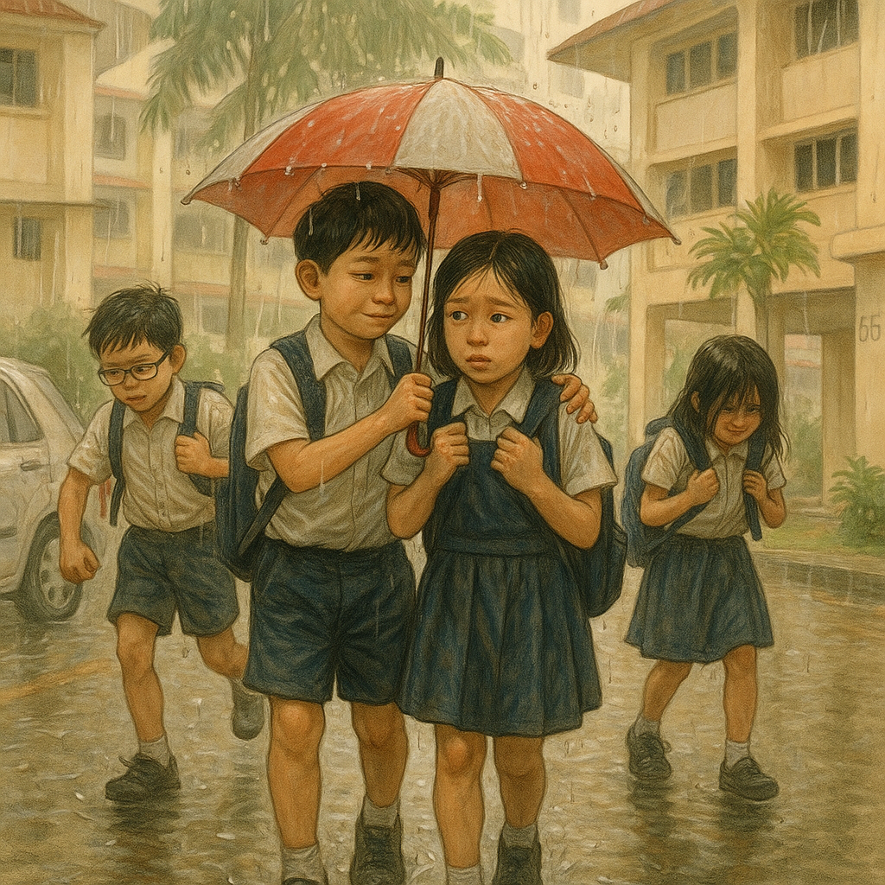
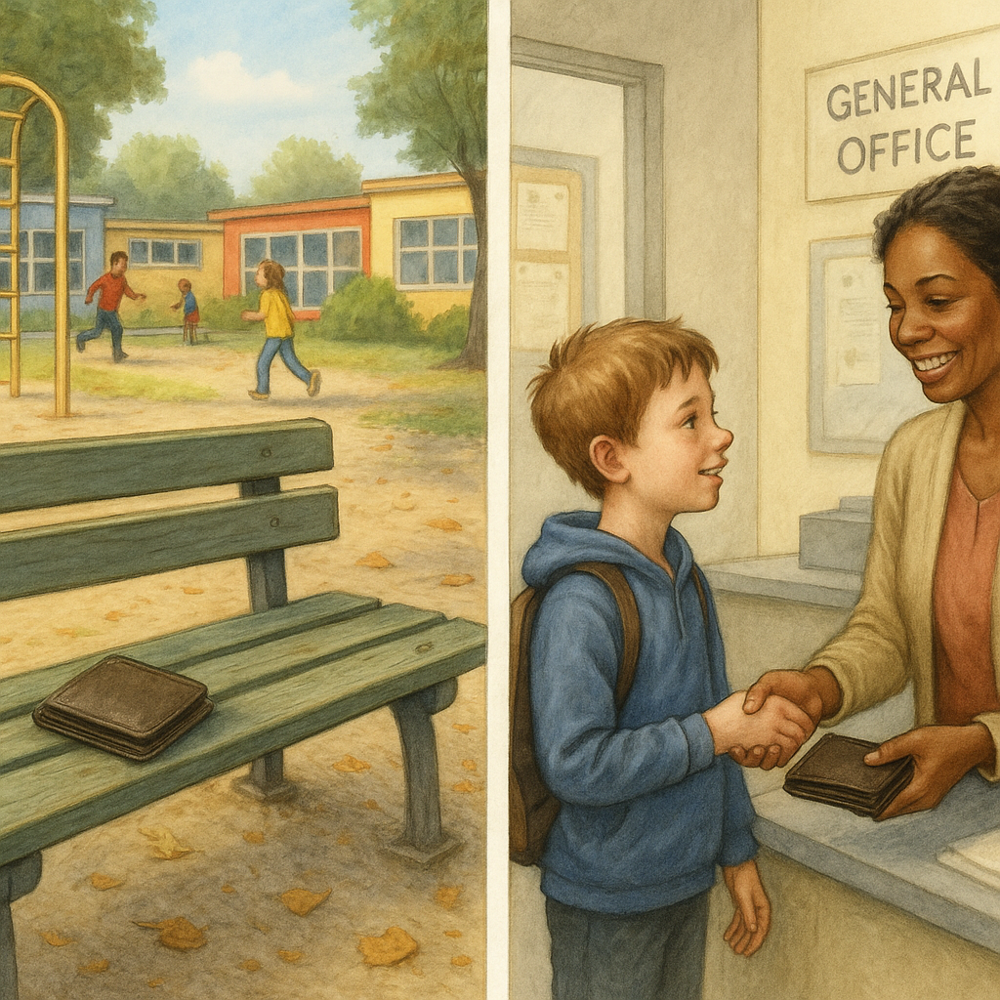
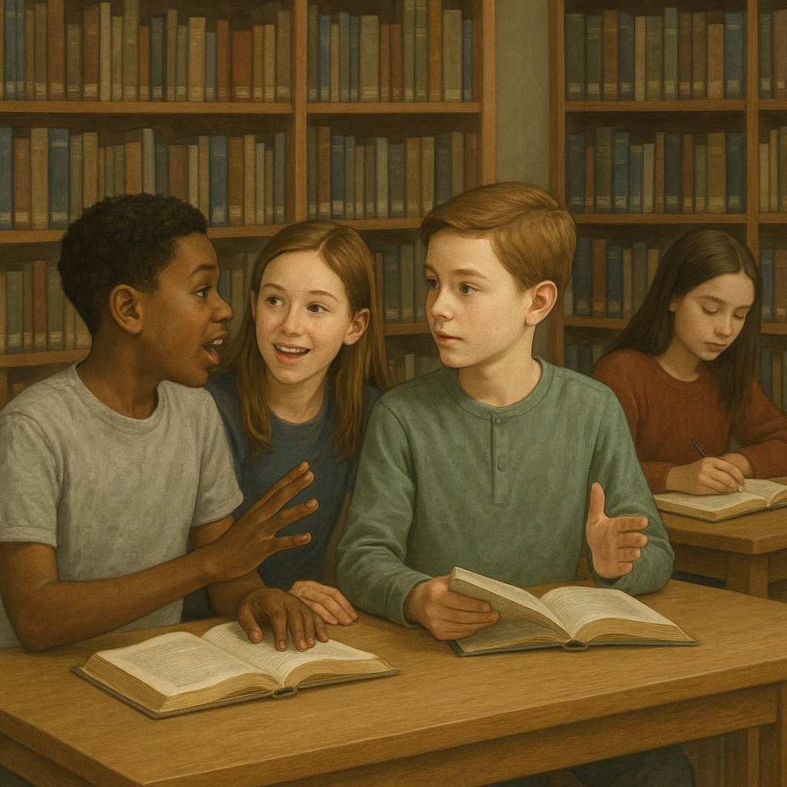
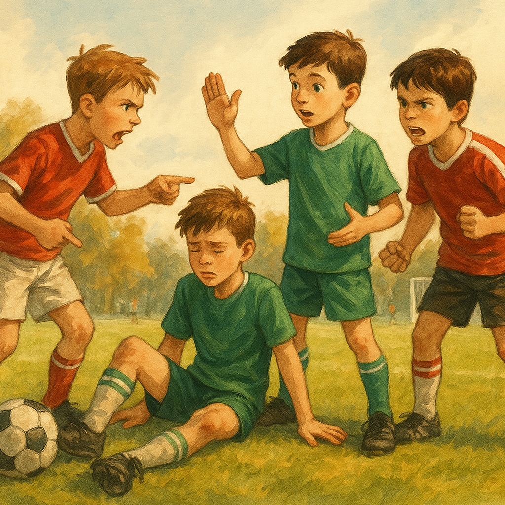
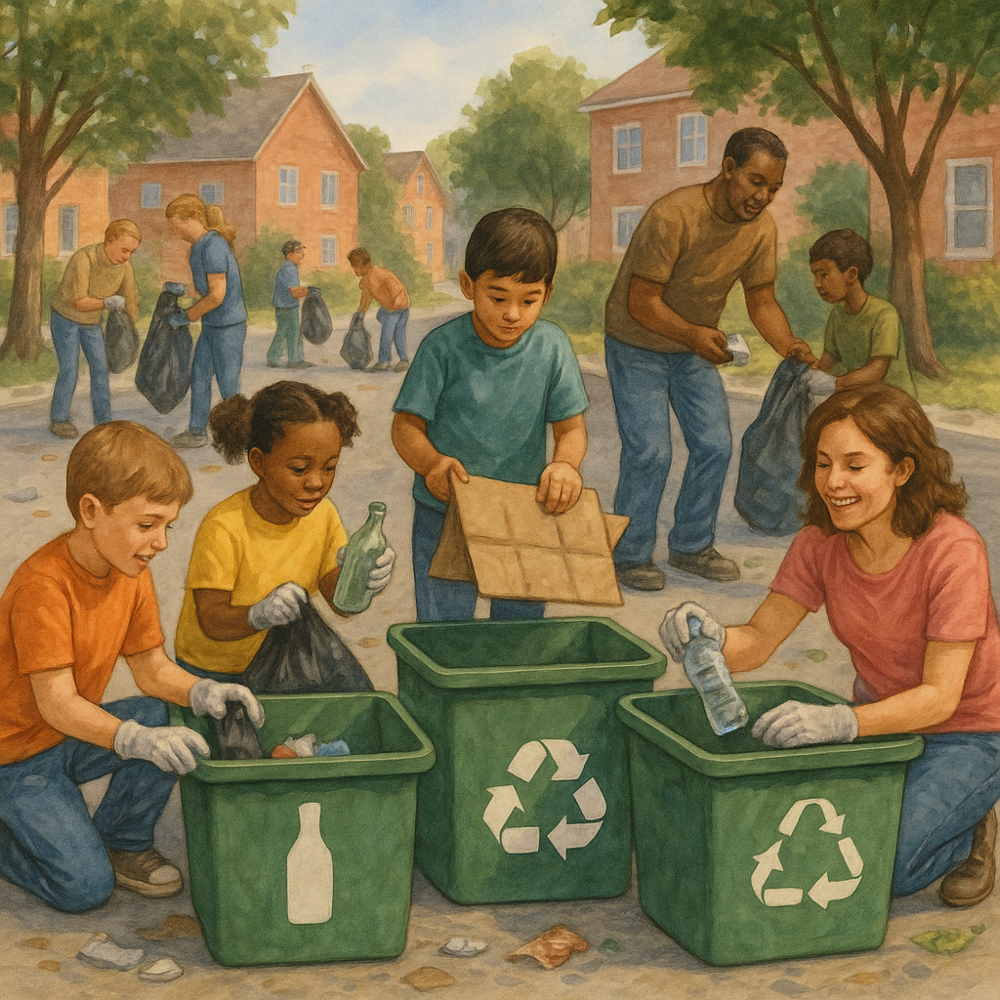
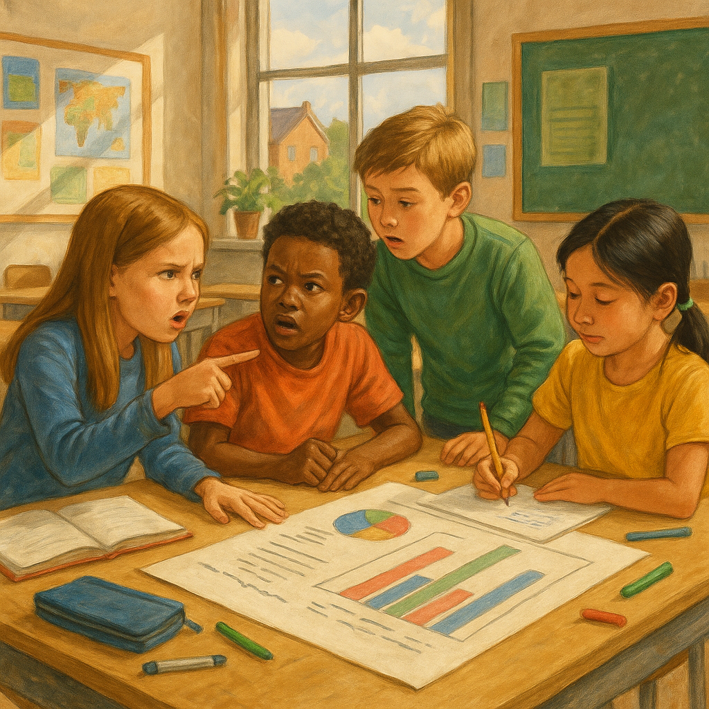
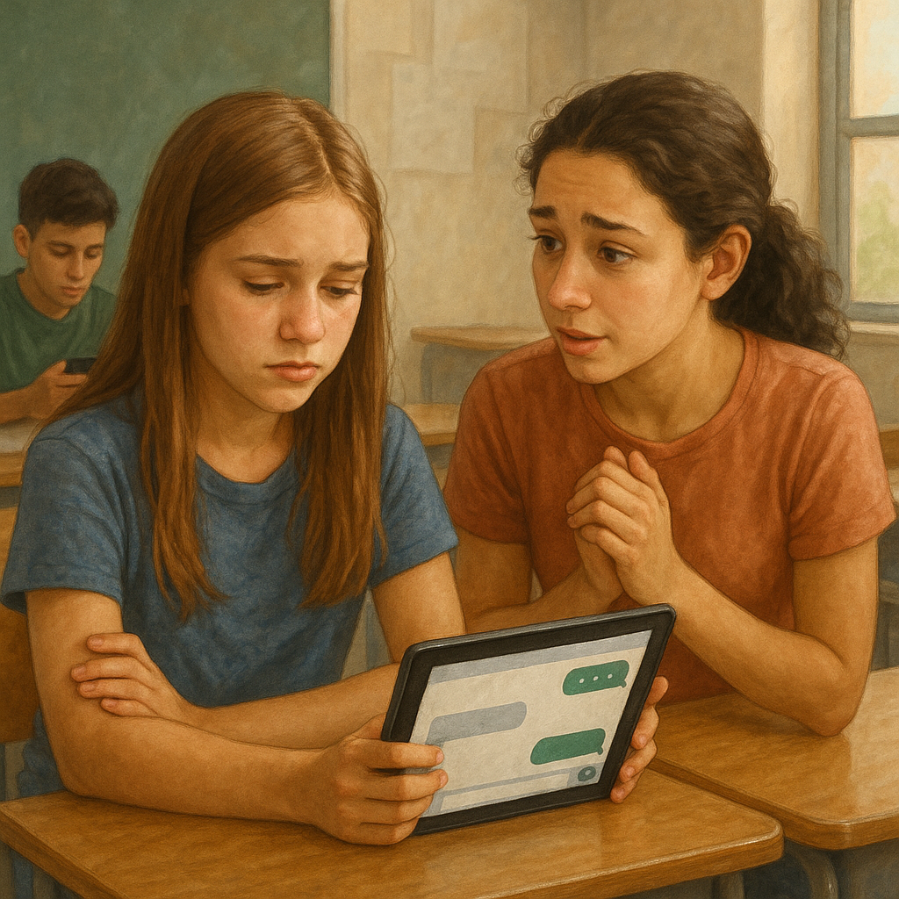
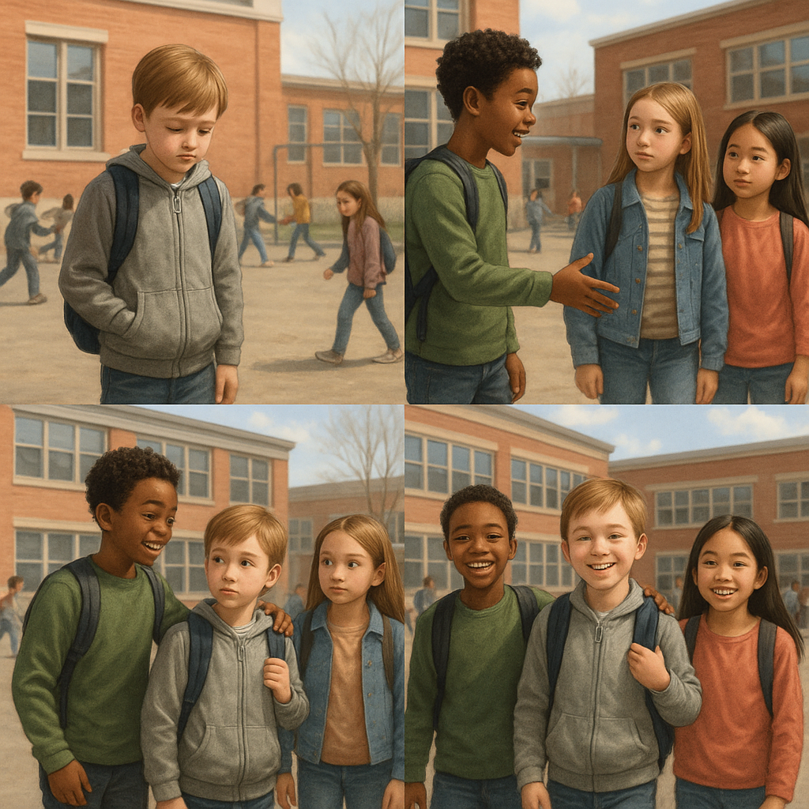

PSLE-style English Composition Bank (Primary 4 & 5)
10 picture-based topics (P4: 5, P5: 5). Keep each composition within 150 words.
PSLE-aligned checklist: clear plot (beginning-problem-ending), relevant details from pictures,
accurate grammar and punctuation, and a meaningful ending/reflection.
P4-1 · A Rainy Day Act of KindnessPrimary 4

Picture 1: School dismissal, dark clouds and heavy rain.
Picture 2: Your classmate has no umbrella and looks worried.
Picture 3: You share help and both get home safely.
Guiding prompts: What did you notice first? What did you do? How did both of you feel at the end? (Max 150 words)
P4-2 · The Wallet on the BenchPrimary 4

Picture 1: You spot a wallet near the playground bench.
Picture 2: You check for clues and go to the general office.
Picture 3: The owner gets it back and thanks you.
Guiding prompts: Why was it important to be honest? Who helped you? What lesson did you learn? (Max 150 words)
P4-3 · Quiet Please!Primary 4

Picture 1: You are reading in the library.
Picture 2: Two pupils are talking loudly.
Picture 3: You remind them politely and everyone settles down.
Guiding prompts: What words did you use? Why is the library a special place? (Max 150 words)
P4-4 · Fair Play on the FieldPrimary 4

Picture 1: During a game, a teammate falls.
Picture 2: Some players argue about a foul.
Picture 3: You choose fair play and the game continues peacefully.
Guiding prompts: How did you calm others down? What does sportsmanship mean to you? (Max 150 words)
P4-5 · Clean-Up Day in My EstatePrimary 4

Picture 1: Residents gather for a clean-up event.
Picture 2: You notice bins are mixed up and litter returns.
Picture 3: You make simple labels and the work becomes smoother.
Guiding prompts: What problem did you solve? How did teamwork help? (Max 150 words)
P5-1 · The Group Project DeadlinePrimary 5

Picture 1: Your group project is behind schedule.
Picture 2: Group members blame one another.
Picture 3: You reorganise tasks and finish just in time.
Guiding prompts: What leadership steps did you take? What changed after your plan? (Max 150 words)
P5-2 · A Hurtful Comment OnlinePrimary 5

Picture 1: You post a joke in a class chat.
Picture 2: A classmate feels hurt and goes silent.
Picture 3: You apologise sincerely and make things right.
Guiding prompts: When did you realise your mistake? How can we be kind online? (Max 150 words)
P5-3 · The Temptation During a TestPrimary 5
Picture 1: You are stuck on a difficult question.
Picture 2: A nearby answer sheet is visible.
Picture 3: You choose honesty and complete the paper on your own.
Guiding prompts: What was your inner struggle? Why does integrity matter? (Max 150 words)
P5-4 · Staying Calm in a BlackoutPrimary 5
Picture 1: The lights suddenly go out at home.
Picture 2: Younger siblings panic.
Picture 3: Your family works together calmly until power returns.
Guiding prompts: What did you do first? How did you keep others calm? (Max 150 words)
P5-5 · Helping a New Student Fit InPrimary 5

Picture 1: A new student sits alone during recess.
Picture 2: You invite him or her into your group.
Picture 3: By term end, the student becomes confident and happy.
Guiding prompts: What did you do over time, not just once? What did this experience teach you? (Max 150 words)